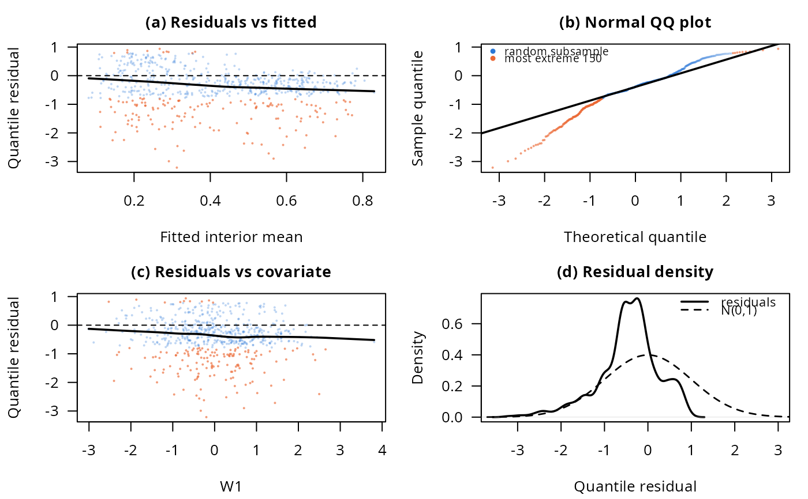

Goodness-of-fit diagnostics for a fitted BIc model (Figure 5 of Ospina, 2026)
Source:R/plots.R
plot_diagnostics.RdRandomized quantile residuals (Dunn and Smyth, 1996) against the fitted
mean and, optionally, a covariate, a normal QQ plot, and the residual
density against the standard normal. Scatter panels subsample for
plotting (the smoothers and all other statistics use the full data,
since gamlss's residuals are unweighted even under survey weights,
see Ospina (2026), Section 8.4): the subsample always keeps the
n_extreme most extreme residuals, shown in orange, on top of a random
draw of the rest, shown in blue, rather than a uniform random draw
alone, which is biased toward hiding exactly the tail behavior a
goodness-of-fit plot exists to show.
Usage
plot_diagnostics(
fit,
data,
covariate = NULL,
covariate_lab = covariate,
n_extreme = 150,
n_bulk = 8000,
seed = NULL
)Arguments
- fit
A fitted model from
bic_fit().- data
The data frame
fitwas fitted on.- covariate
Optional character, the name of a covariate in
datato plot residuals against in an extra panel (used for the paper'slog household incomepanel).NULL(default) omits that panel.- covariate_lab
Axis label for
covariate's panel; defaults tocovariateitself.- n_extreme
Number of most-extreme residuals always shown.
- n_bulk
Size of the random subsample of the remaining residuals.
- seed
Optional seed (randomized quantile residuals depend on it at the boundary observations; the paper fixes it).
Value
Invisibly, a list with residuals (the full vector of
randomized quantile residuals), deviance, AIC, BIC, filliben
(the probability-plot correlation coefficient) and shapiro (the
shapiro.test() result on a random subsample of at most 5000, the
largest the test accepts). Called mainly for its plotting side
effect; draws all panels in the current graphics device.
Examples
dat <- simulate_bic(600, seed = 1)
fit <- bic_fit(y ~ T + W2, nu.formula = ~ T + W1, data = dat)
plot_diagnostics(fit, dat, covariate = "W1", seed = 1)
